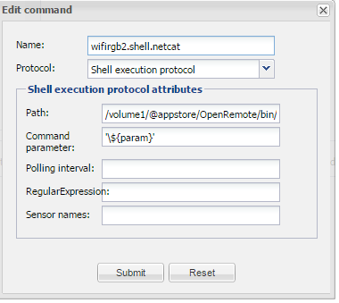

Hello,
ive made a scipt which sends the command: x56\xff\x00\x00\xaa to a shell script
unfortunately x56\xff\x00\x00\xaa cannot be send because the char "\" is not allowed. the boot.log says that this char is not allowed.
is there another possibility?
this script runs when a switch is pushed:
rule "wifi rgb controller2 kleur rood" when //when switch is pushed: Event( source == "rood.wifi.rgb.2.sens", value == "on") then //turn switch off execute.command("rood.wifirgb2.uit"); //send variable to shell command execute.command("wifirgb2.shell.netcat", "x56\xff\x00\x00\xaa"); end
the variable will be sent to shell script and execute a netcat command to control my ambilight

any posibillitys to send the command with chat "\" inside the string? tnx
{kind=link}
|
Yes, it is possible. You need to escape it with another \, so it should look like \\x56\\xff\\x00\\x00 |
|
HI thanks i tried that already ( https://en.wikipedia.org/wiki/String_literal ) but it does not return the correct value, i tried this execute command: execute.command("wifirgb2.shell.netcat", "\\x56\\xff\\x00\\x00\\xaa"); the log file says: DEBUG 2015-08-20 07:04:46,064 (Shell): Will start shell command: /volume1/@appstore/OpenRemote/bin/wifi-rgb/wifi-rgb2.sh and use params: '\x56xffx00x00xaa' DEBUG 2015-08-20 07:04:46,156 (Shell): Shell command: /volume1/@appstore/OpenRemote/bin/wifi-rgb/wifi-rgb2.sh returned: but it has to be '\x56\xff\x00\x00\xaa' here is the 2nd rule: rule "wifi rgb controller 2 kleurenschijf" when $evt2:Event( source == "sensor.wifi.schijf2", $val2 : value) then String valStr2 = $val2.toString(); if (valStr2 != null && valStr2.length() == 6) { String rStr1 = valStr2.substring(0,2); String gStr2 = valStr2.substring(2,4); String bStr3 = valStr2.substring(4,6); execute.command("rgb2.kleurenschijf", rStr1.toString() + "\005C" + gStr2.toString() + "\005C" + bStr3.toString()); } end any ideas? |
|
As I said, you must add escape character for each string parsing command. How many there are depends. For example, I had to add '\n' to a command for separation, so I'll finally call:
curl "Comand1\ncommand2"
through a shell script. In rules I'm preparing this with:
$c.setNmea($n+"\\\\n"+$s);
Where $n is command1 and $s is command2. Note, there are 3 escape \. |
|
Michal Regular Expressions, Literal Strings and Backslashes In literal Java strings the backslash is an escape character. The literal string "\\" is a single backslash. In regular expressions, the backslash is also an escape character. The regular expression \\ matches a single backslash. This regular expression as a Java string, becomes "\\\\". That's right: 4 backslashes to match a single one. The regex \w matches a word character. As a Java string, this is written as "\\w". The same backslash-mess occurs when providing replacement strings for methods like String.replaceAll() as literal Java strings in your Java code. In the replacement text, a dollar sign must be encoded as \$ and a backslash as \\ when you want to replace the regex match with an actual dollar sign or backslash. However, backslashes must also be escaped in literal Java strings. So a single dollar sign in the replacement text becomes "\\$" when written as a literal Java string. The single backslash becomes "\\\\". Right again: 4 backslashes to insert a single one. its for controlling an RGB wifi370 controller, see below for full documentation: it works with "\\\\" to get a single \ rule "wifi rgb controller2 kleur rood" when Event( source == "rood.wifi.rgb.2.sens", value == "on") then \\turn switch off and send static colour command (below colour red is sent) execute.command("rood.wifirgb2.uit"); execute.command("wifirgb2.shell.netcat", "\\\\x56\\\\xff\\\\x00\\\\x00\\\\xaa"); end this rule below works for the colourpicker rule "wifi rgb controller 2 kleurenschijf" when $evt2:Event( source == "sensor.wifi.schijf2", $val2 : value) then String valStr2 = $val2.toString(); // if string is 6 chars then proceed // seperate the RGB values from the colourpicker command received // x56 is the header and xaa is the footer of the colour command to be send (see below link for more info) // then combines all values to \x56\xRR\xGG\xBB\xaa if (valStr2 != null && valStr2.length() == 6) { String rStr1 = "x" + valStr2.substring(0,2); String gStr2 = "x" + valStr2.substring(2,4); String bStr3 = "x" + valStr2.substring(4,6); String bs = "\\\\"; String hd = "x56"; String ft = "xaa"; execute.command("wifirgb2.shell.netcat", bs.toString() + hd.toString() + bs.toString() + rStr1.toString() + bs.toString() + gStr2.toString() + bs.toString() + bStr3.toString() + bs.toString() + ft.toString()); } end its returns: \x56\xff\x00\x00\xaa which has to be sended to a shell script create a shell command called : wifirgb2.shell.netcat
'${param}'
create a .sh file with the code: echo -e $1 | nc -q 1 192.168.1.23 5577 set the path in the shell command to your .sh file this shell script will close the tcp connection from ip 192.168.1.23 and port 5577 after 1 second when the red color string '\x56\xff\x00\x00\xaa' has been sended. don't set this to 0 otherwise your shell will freeze for a few minutes and all rules won't work . it works for the wifi370 rgb controller, see documentation and commands: http://blog.stedmeister.co.uk/ this script works on my synology but you have to install bootsrap (IPKG) see:
http://www.synology-wiki.de/index.php/IPKG (german) then install netcat on the synology: ipkg install netcat unfortunately i noticed that after a reboot of the synology the bootstrap wont start, i dont know what causes this problem see also a documentation to control the Hyperion TV Ambilight on your raspberry PI: http://www.openremote.org/display/forums/converting+colourpicker+hex+value+to+decimal+value |
|
If you are calling netcat from a rule through shell command then perhaps you can simply use a TCP/IP protocol instead? You can feed it with hex string for the Command: field. For '\x56\xff\x00\x00\xaa' you will send simply '0x56ff0000aa'. |
|
i did that before, it works directly with a pushbutton and the tcp command but when i call that same command from rules the whole system freezes. rules will hangup itself for a few minutes and nothing works . i dont know what that problem is, probably the wifi controller will cause this. i want to execute this command via rules because i can couple 2 or more wifi controllers and give them one colour at the same time and than it works perfectly with the netcat command. maybe you could help me out why netcat and bootstrap wont work after a synology reboot? |
|
when using a sensor to the tcp command still freezes rules and it hangs for a few minutes, so i need a parameter to disconnect the tcp connection like netcat does now |